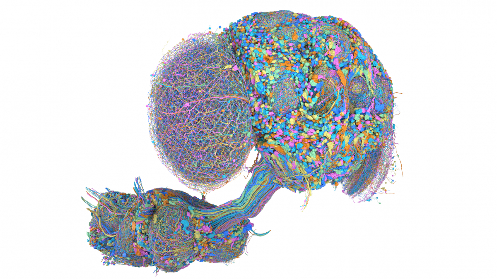

FORAGING IN SPACE
A fly brain in a new world.
PLANAR ARENAPAUSED
Dog poo +1Flytrap −1
WASD / arrows to fly
Episode return0poo +1 · trap −1 · wall −0.01/step
Collected0 / 16rewards disappear on contact
Trap contacts0avoid the open jaws
Time remaining60sstep 0 / 1800
MALE CNS / v1.0
Explore the fly’s anatomy

ANATOMICAL REFERENCE · ACTIVITY UNAVAILABLE
OPTIC LOBESCENTRAL BRAINVENTRAL NERVE CORD
—modeled neurons
—directed connections
OUTPUT CONTRIBUTIONS
Select the brain pilot to measure activity for an action.
Mean activity by region
Active neurons
- Waiting for a model observation
No checkpoint loadedTraining status unavailable
Sensory receipt appears after a brain action
MaleCNS: FlyEM / HHMI Janelia, Cambridge / MRC LMB & Google Research · CC BY 4.0 data. Highlights show this model’s activity and learned readout contributions, not biological causality.
Through the fly’s eyes
MONO · 100° FOVFORWARD VIEW96 × 64 RGB
Ahead is up. Only the forward field is visible.
RIGHT EYE96 × 64 RGB
Parallel cameras · 0.22 unit separation
ATTRACTION SCENTON
Strength 0.00Source unknown
Poo and flytraps smell alike. Use vision to tell them apart.